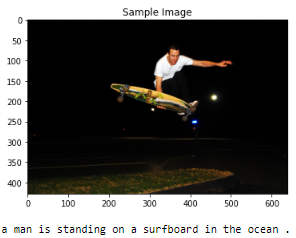
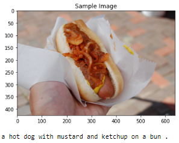
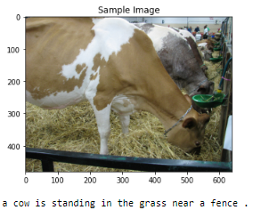
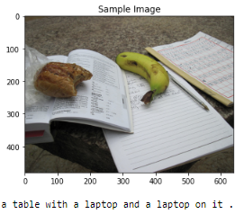
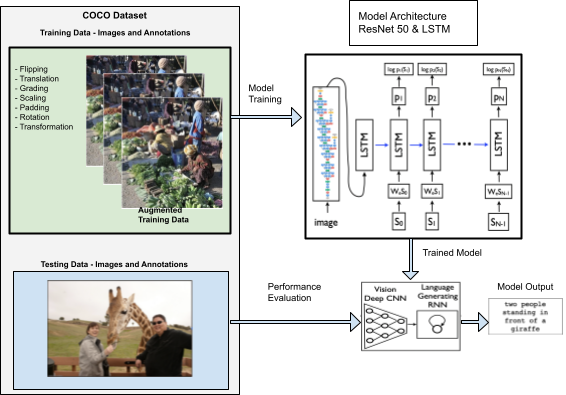

Project Progress: Week 2
Here are some sample images along with the annotations from the COCO Dataset that we have used for our project:
|  |  |  |  |
The diagram below presents a high level description of our implementation:
|  |
The original Neural Image Caption (NIC) model, as described in the 2015 paper by Oriol Vinyals, et. al.,
is composed of a deep convolutional neural network (CNN) and a recurrent neural network (RNN), which act
as the encoder and decoder, respectively. The CNN was first pre-trained for image classification
tasks, then used to embed the input image into a fixed-length vector. The last hidden layer is thereafter provided
as visual input directly to the RNN. The authors chose to use a Long-Short Term Memory (LSTM) net as the RNN for
sequence modeling because of its ability to handle vanishing and exploding gradients. The loss function is the sum of the
negative log likelihood of the correct word at every step:
\(L(I, S)=-\sum_{t=1}^N \log p_t\left(S_t\right)\).
Where I is the image, S is the sentence, and t is the step. For inference and sentence generation, the BeamSearch
approach was selected, which iteratively considers the set of k best sentences up to time t.
For our dataset, we used COCOAPI [2] for annotations and images. For hyperparameters, we used 128 batch size, 300 embedding size, 3 epochs, 0.001 learning rate, and total steps is length of caption size divided by batch size.
At first we attempted to use Tong’s model [4] for NIC, but had issues downloading Visual Genome from Stanford.
Eventually, we found a model created by Shwetank [3] that allowed us to train a model with a publicly available dataset.
However, there were many difficulties loading the actual dataset into the original model due to compiling complications.
The model ran as expected and we were able to capture text from images.
Before running the model, we expected that the process to load/download data and run an existing model. However, Tong’s model
needed the bottom up attention approach to extract annotations from images. Surprisingly, the method labels segments of each
image and records the areas of these segments. Shwetank’s approach used COCOAPI that already had annotations extracted from each image.
A major obstacle that we avoided was to not recode something that exists as an online resource. We also decided to utilize
the model’s pre-existing dataset.
[1] Vinyals, Oriol, et al. Show and tell: A neural image caption generator. Proceedings of the IEEE conference on computer vision and pattern recognition. 2015.
[2] https://github.com/cocodataset/cocoapi
[3] https://github.com/pshwetank/NIC-2015-Pytorch
[4] https://github.com/ezeli/NIC_model